Теоретическая часть
До этого момента мы писали консольные приложения — программы, которые общаются с пользователем через текст в чёрном окошке консоли. Теперь настало время сделать настоящее окошко с кнопками и картинками, как в обычных программах 😃. Мы познакомимся с технологией Windows Forms, с помощью которой можно создавать окна (формы) и размещать на них различные элементы управления: кнопки, поля картинок, надписи и т.д.
Что такое Windows Forms?
Windows Forms (WinForms) — это часть платформы .NET Framework, предоставляющая инструменты для создания графического интерфейса пользователя (GUI) в Windows. WinForms позволяет нашей программе открывать настоящее окно. Это окно называется формой (Form). На форме мы можем размещать другие элементы — например, кнопку (Button) или поле для картинки (PictureBox).
Форму можно представить как холст или экран приложения, на котором мы «рисуем» элементы интерфейса. Ранее в консольных программах вывод и ввод были текстовыми; теперь же мы сможем делать красивые интерфейсы с визуальными компонентами.
Элемент PictureBox — «рамка» для картинки
Чтобы отображать изображения в форме, существует специальный компонент — PictureBox. PictureBox — это как фоторамка или окно для картинки внутри нашего окна-программы. Мы можем поместить этот элемент на форму, указать ему картинку — и PictureBox покажет её пользователю.
PictureBox сам по себе не генерирует изображение — он просто выводит то, что ему дают. Картинку можно загрузить из файла или ресурса.
Массивы — хранение нескольких элементов в одной переменной
До сих пор, если нам нужно было хранить несколько значений, мы создавали отдельные переменные для каждого. Но представьте: у нас 10 картинок для галереи. Неудобно заводить 10 переменных под каждый файл. Тут на помощь приходит массив.
Массив — это набор элементов одного типа, размещённых подряд в памяти, доступ к которым осуществляется по индексу. Массив похож на вагончики поезда, пронумерованные последовательно. Каждый вагон — это как отдельная переменная, а весь поезд — единое целое.
- У массива есть имя (как у переменной) и индекс — номер элемента внутри него
- В C# первый элемент массива имеет индекс 0, а не 1!
- Если в массиве 5 элементов, их индексы будут 0, 1, 2, 3, 4
Например, объявление массива из трёх целых чисел:
int[] numbers = new int[3]; numbers[0] = 5; numbers[1] = 10; numbers[2] = 15; Console.WriteLine(numbers[1]); // выведет 10
Теперь numbers хранит {5, 10, 15}. В нашем проекте мы воспользуемся массивом, чтобы хранить список файлов изображений (имена файлов или пути). Тогда мы сможем легко получать следующий или предыдущий файл по индексу.
Работа с файлами: загрузка изображений
Впервые в нашем курсе программа будет работать с файлами на
компьютере. Наши картинки хранятся как файлы (например, .jpg или .png). В .NET есть класс
Image (пространство имён System.Drawing), который позволяет загрузить картинку из
файла через метод Image.FromFile("имя файла").
Важно: если программа не находит файл по указанному пути — она выдаст ошибку.
Так что пути/имена надо писать точно как у файлов и учитывать их расположение. Лучше положить
все картинки прямо в папку с исполняемым файлом и писать просто имена: "1.jpg", "2.jpg" и т.д.
Логика переключения изображений
Обсудим, как будет работать наше приложение «AI-Галерея». У нас есть, допустим, 8 картинок. Мы хотим, чтобы пользователь мог нажимать «Далее» и «Назад» для перехода между картинками. Это реализуемо с помощью массива: заведём массив путей к файлам и индекс текущей картинки.
➡️ Кнопка «Далее»
- Увеличиваем индекс на 1
- Если вышли за пределы — возврат к первой картинке
- Загружаем картинку по новому индексу
⬅️ Кнопка «Назад»
- Уменьшаем индекс на 1
- Если вышли в минус — переход к последней картинке
- Загружаем картинку по новому индексу
Кроме того, будет режим «Случайное изображение» — кнопка, которая при нажатии покажет картинку, случайно выбранную из списка. Тут нам снова поможет знакомый класс Random. Это тот же принцип, что мы использовали в игре «Угадай число», только теперь случайное число будет выбирать картинку.
Подготовка — генерация AI-картинок
Заранее дайте ребятам 10 минут, чтобы они сгенерировали картинки. Можно использовать Alica AI (один аккаунт для всех) либо QWEN (используйте временную почту).
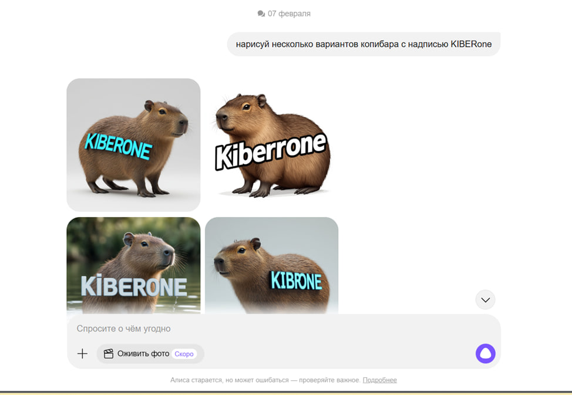
Сохраните все картинки, назовите их 1.jpg, 2.jpg и т.д. — так будет проще работать с ними в коде.
В практической части ученики сами создают проект Windows Forms и пишут код под руководством преподавателя. Общая продолжительность практики ~50 минут. Получившееся приложение позволит листать изображения. Ниже план действий разбит на главы.
Глава 1 — Создание проекта и интерфейса
1. Создание проекта WinForms
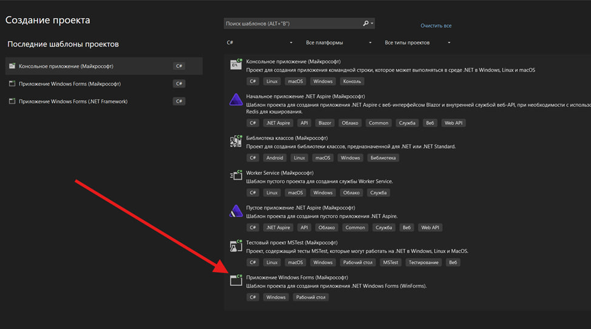
2. Настройка формы
У вас откроется дизайнер формы с пустым окном Form1. В правой части экрана найдите окно Properties (Свойства). Здесь можно задать заголовок окна — свойство Text. Поменяйте Text формы на «AI-Галерея», чтобы на строке заголовка окна отображалось название приложения. Можно также подогнать размер формы — например, сделать окно примерно 800×600.
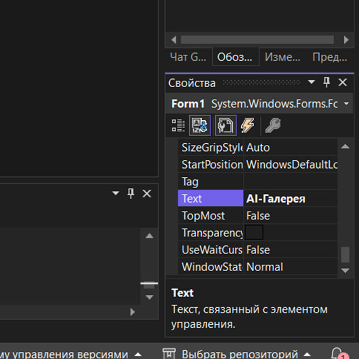
3. Добавление PictureBox
Теперь добавим элемент для отображения картинок. Откройте панель Toolbox (Вид →
Панель элементов) (либо комбинация ALT+CTRL+X) и найдите
там PictureBox. Перетащите PictureBox на форму. Измените его размер, чтобы он был
достаточно большим для ваших изображений.
В Properties у PictureBox найдите свойство SizeMode и выберите значение Zoom (или StretchImage). Zoom подгонит изображение по размеру, сохранив пропорции, так что картинка целиком влезет.
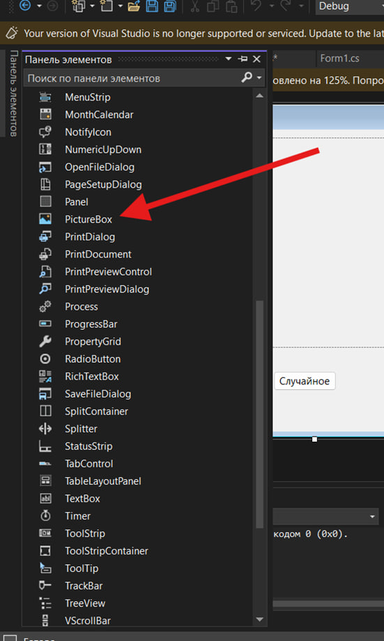
4. Добавление кнопок управления
Нам потребуются кнопки: «Назад», «Далее», «Случайное». Добавьте три кнопки (Button) на форму из Toolbox. Расположите их ниже PictureBox в ряд. Установите для каждой понятный текст:
🏷️ Text (Текст)
- Button1 → «Назад»
- Button2 → «Далее»
- Button3 → «Случайное»
🏷️ (Name) — рекомендуется
- Button1 → btnPrev
- Button2 → btnNext
- Button3 → btnRandom
Переименование кнопок (свойство (Name)) — необязательно, но поможет в коде понимать, где какая кнопка. Если не переименовывать, они будут называться button1, button2 и т.д. — это тоже допустимо.
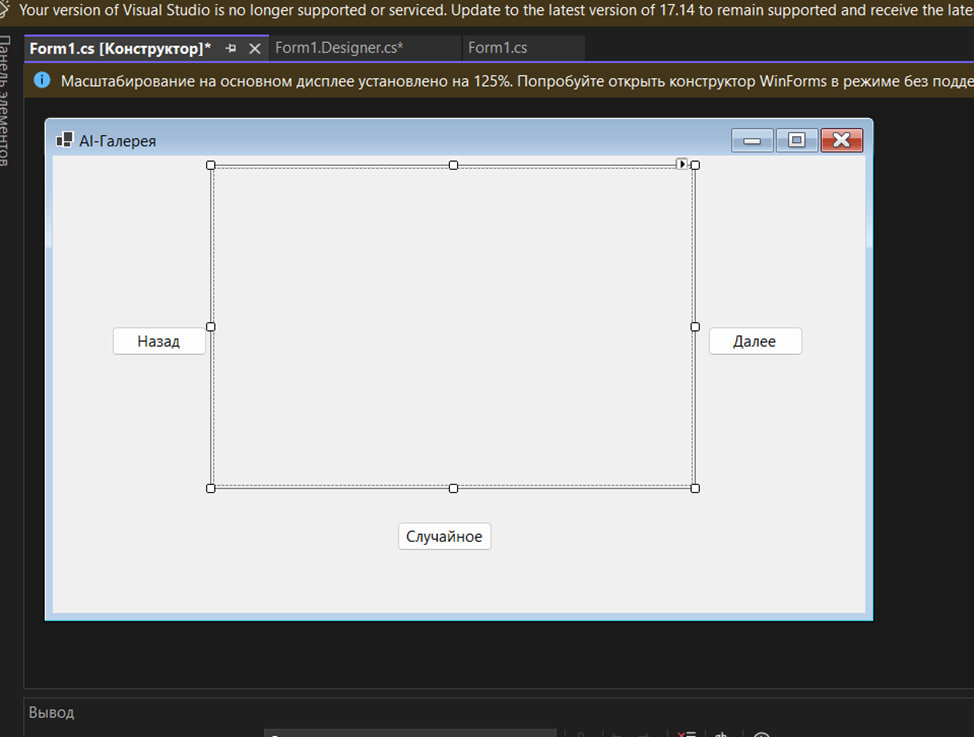
На этом дизайн формы готов: у нас есть Form1 с PictureBox и 3 кнопками.
Перед написанием кода убедитесь, что все изображения (8–10 файлов) скопированы в папку проекта. Лучший способ: добавить файлы в проект через Solution Explorer (правой кнопкой по проекту → Add → Existing Item → выбрать картинки). Затем выделить добавленные файлы и в Properties выставить Copy to Output Directory: Copy always (копировать всегда в выходной каталог).
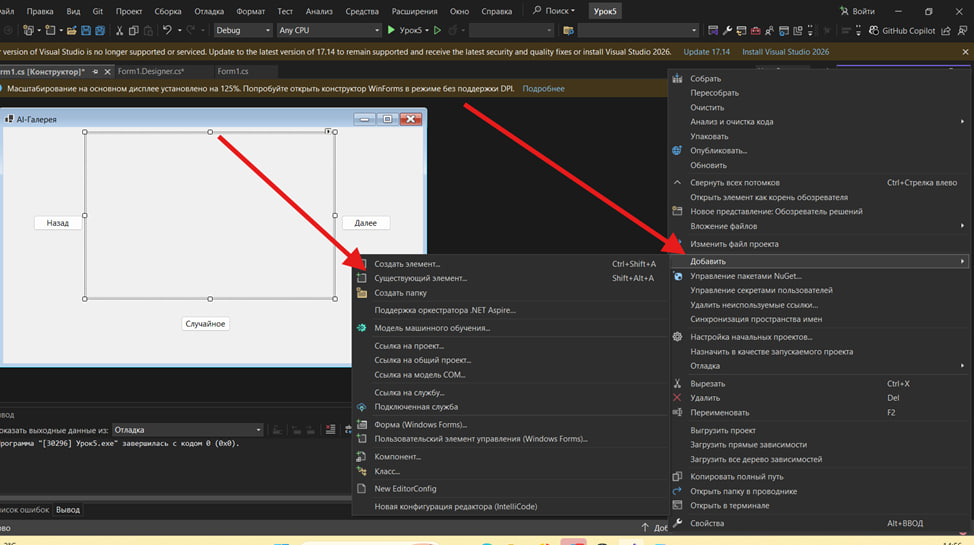
Не забудьте выбрать подходящее расширение файла!
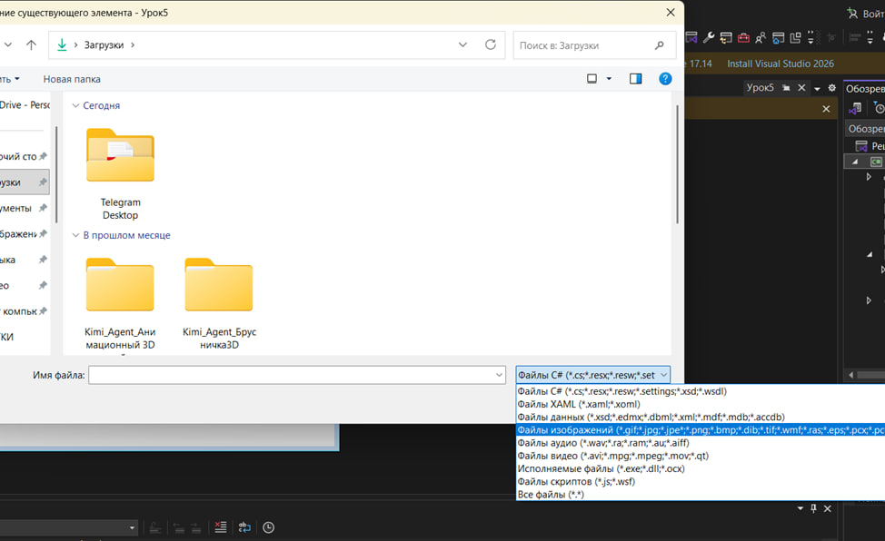
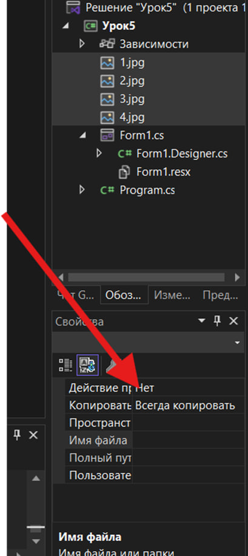
Глава 2 — Подготовка массива изображений и начальный вывод
Теперь перейдём к написанию кода. Нам нужно научить программу загружать картинки в PictureBox. Будем хранить список файлов в массиве и отслеживать текущую картинку через индекс.
1. Открытие кода формы
В Visual Studio переключитесь со вкладки Form1.cs [Design] на
Form1.cs (код). Либо правой кнопкой по форме → Посмотреть код. Вы
увидите класс public partial class Form1 : Form
с конструктором InitializeComponent().
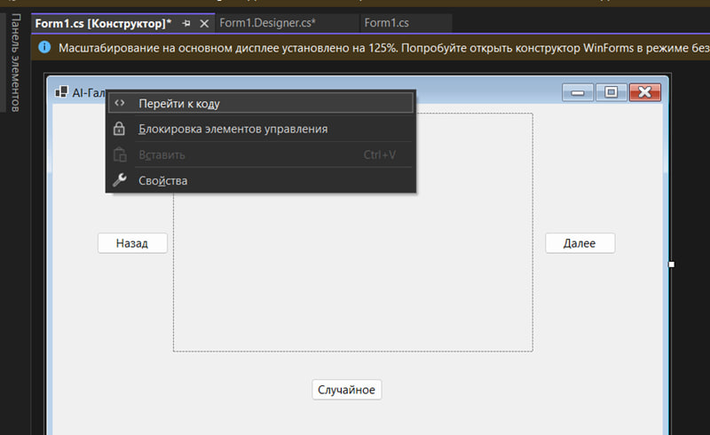
2. Объявление массива и переменных
Прямо внутри класса Form1 (но вне любых методов, сверху) объявим необходимые переменные: массив строк с путями к файлам изображений, текущий индекс и объект Random.
Добавьте такой код в класс Form1 (внутри { } класса, но не внутри других функций):
// Массив имен файлов изображений private string[] imageFiles = { "1.jpg", "2.jpg", "3.jpg", // ... добавьте все ваши файлы сюда "pic8.jpg" }; // Индекс текущего отображаемого изображения private int currentIndex = 0; // Random для случайного выбора private Random rand = new Random();
Здесь мы сразу перечислили имена файлов в фигурных скобках { ... }. Замените
"1.jpg", "2.jpg", ... на реальные имена ваших файлов (с расширениями). Можно писать и с
относительным путём, если они в подпапке, например "Images/pic1.jpg",
но лучше чтобы лежали рядом и писать просто имена.
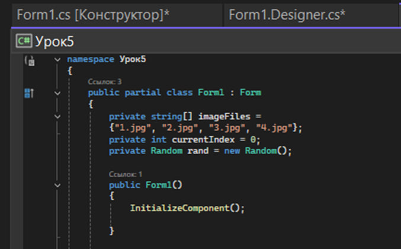
Загрузка первой картинки при старте
Нам нужно, чтобы когда программа запустилась, в PictureBox сразу появилась первая картинка (индекс 0). Для этого воспользуемся событием Form Load — код, который выполняется когда форма загрузилась. В дизайнере дважды щёлкните по самой форме (не по элементам, а по пустому месту формы).
private void Form1_Load(object sender, EventArgs e) { // При загрузке формы показываем первую картинку pictureBox1.Image = Image.FromFile(imageFiles[currentIndex]); }
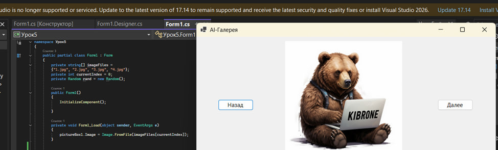
После этих действий, когда вы запустите программу (кнопка ▶️ Start), форма откроется и сразу должна показать первую картинку. Если произошла ошибка, проверьте:
- Правильно ли указаны имена файлов в массиве imageFiles?
- Точно ли файлы находятся в нужной папке (там, откуда запускается приложение)?
- Сообщение об ошибке в консоли Output или всплывающее окно подскажет, какой файл не найден
Глава 3 — Переключение между изображениями
Теперь реализуем логику листания галереи с помощью кнопок «Назад» и «Далее». Мы уже подготовили currentIndex и массив картинок, так что код будет достаточно прост: изменить индекс и загрузить изображение по новому индексу.
1) Обработчик для кнопки «Далее»
В дизайнере дважды кликните по кнопке «Далее». Должен появиться метод btnNext_Click. Заполните этот метод следующим кодом:
private void btnNext_Click(object sender, EventArgs e) { // Увеличиваем индекс currentIndex++; // Если вышли за пределы массива, то возвращаемся к началу if (currentIndex >= imageFiles.Length) { currentIndex = 0; } // Загружаем изображение с новым индексом pictureBox1.Image = Image.FromFile(imageFiles[currentIndex]); }
Здесь мы увеличиваем currentIndex на 1. Затем проверяем: если currentIndex стал равен длине
массива (то есть мы были на последнем изображении и вышли за пределы), то устанавливаем currentIndex = 0
(возвращаемся к первому изображению). После этого загружаем картинку по новому индексу.
Результат — при каждом нажатии «Далее» будет показываться следующая картинка, а после последней
снова первая (циклично).
2) Обработчик для кнопки «Назад»
Аналогично, дважды кликните по кнопке «Назад». Получите метод btnPrev_Click. Заполните его кодом:
private void btnPrev_Click(object sender, EventArgs e) { // Уменьшаем индекс currentIndex--; // Если ушли перед начало массива, переходим к последнему элементу if (currentIndex < 0) { currentIndex = imageFiles.Length - 1; } // Загружаем изображение с новым индексом pictureBox1.Image = Image.FromFile(imageFiles[currentIndex]); }
МОЖНО СКОПИРОВАТЬ ПРЕЖНИЙ ОБРАБОТЧИК И ПОМЕНЯТЬ КОД — обработчик btnNext_Click и btnPrev_Click очень похожи, отличается только направление изменения индекса.
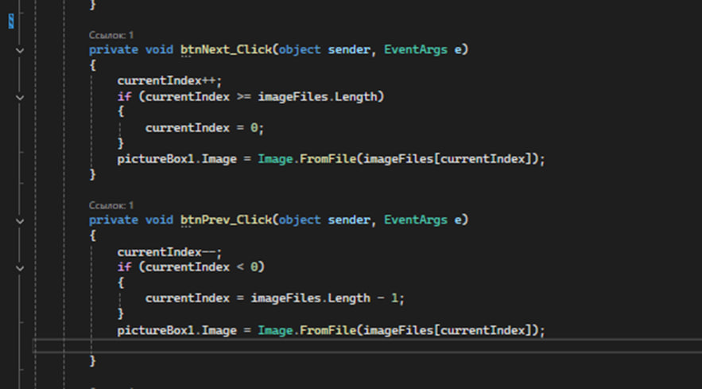
3) Тест листания
Запустите программу. Попробуйте нажимать «Далее» и «Назад». Картинки должны сменяться в обе стороны. Проверьте граничные ситуации:
- Нажмите «Далее» много раз — после последнего изображения должна снова показываться первая картинка без ошибок
- Аналогично с «Назад» — с первого нажмите «Назад» и убедитесь, что показывается последняя картинка
Глава 4 — Режим случайного изображения
Следующая функция — показать случайное изображение по кнопке «Случайное». Это разнообразит просмотр и закрепит использование Random.
Обработчик для «Случайное»
Дважды кликните по кнопке «Случайное». Visual Studio сделает метод btnRandom_Click:
private void btnRandom_Click(object sender, EventArgs e) { // Получаем случайный индекс от 0 до длина-1 int randomIndex = rand.Next(imageFiles.Length); // Можно избежать повторения того же изображения: if (randomIndex == currentIndex && imageFiles.Length > 1) { // если случайно выбран тот же самый индекс, сгенерируем другой randomIndex = rand.Next(imageFiles.Length); } // Устанавливаем текущий индекс на случайный currentIndex = randomIndex; // Загружаем изображение по этому индексу pictureBox1.Image = Image.FromFile(imageFiles[currentIndex]); }
Разбор кода: Метод rand.Next(imageFiles.Length)
генерирует целое число от 0 до Length-1 включительно (помните, верхняя граница не входит,
поэтому мы не вычитаем 1 явно). Это и будет случайный индекс картинки.
- Если randomIndex совпал с текущим currentIndex и при этом больше одной картинки в списке — пробуем ещё раз получить новое число. Это сделано, чтобы не было ощущения, что «ничего не сработало»
- После этого присваиваем
currentIndex = randomIndexи загружаем картинку по новому индексу - Можно даже в цикл while завернуть для надёжности, но вероятность выпадения того же числа два раза подряд крайне мала
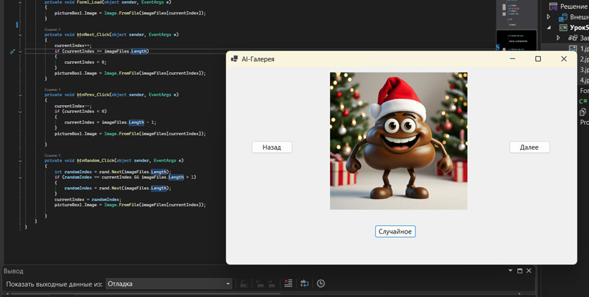
Полный код программы
namespace Урок5 { public partial class Form1 : Form { private string[] imageFiles = {"1.jpg", "2.jpg", "3.jpg", "4.jpg"}; private int currentIndex = 0; private Random rand = new Random(); public Form1() { InitializeComponent(); } private void Form1_Load(object sender, EventArgs e) { pictureBox1.Image = Image.FromFile(imageFiles[currentIndex]); } private void btnNext_Click(object sender, EventArgs e) { currentIndex++; if (currentIndex >= imageFiles.Length) { currentIndex = 0; } pictureBox1.Image = Image.FromFile(imageFiles[currentIndex]); } private void btnPrev_Click(object sender, EventArgs e) { currentIndex--; if (currentIndex < 0) { currentIndex = imageFiles.Length - 1; } pictureBox1.Image = Image.FromFile(imageFiles[currentIndex]); } private void btnRandom_Click(object sender, EventArgs e) { int randomIndex = rand.Next(imageFiles.Length); if (randomIndex == currentIndex && imageFiles.Length > 1) { randomIndex = rand.Next(imageFiles.Length); } currentIndex = randomIndex; pictureBox1.Image = Image.FromFile(imageFiles[currentIndex]); } } }
ОЧЕНЬ ВАЖНО — Частая проблема с обработчиками
Если вы впервые работаете на VS и с Windows Forms, изучите информацию ниже. Дети смогут обратиться к вам с вот такой вот проблемой:
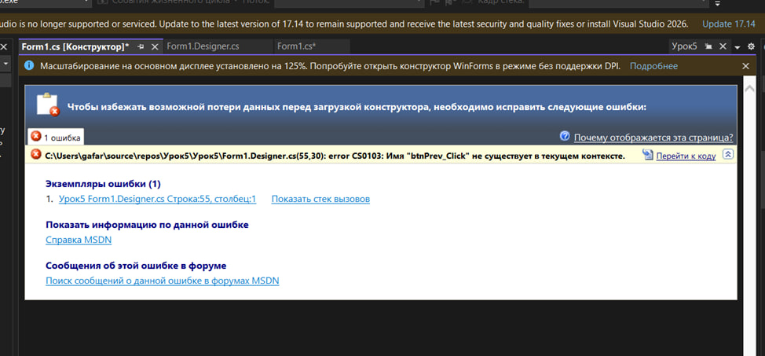
Дело в том, что когда вы создаёте обработчик при помощи двойного клика, он добавляется в 2 места. Такая проблема возникает, когда ребёнок удаляет созданную функцию (либо меняет её как-то). Если вы удаляете обработчик в Form1.cs, для избежания конфликтов нужно удалить и в другом месте.
Вот как это сделать:
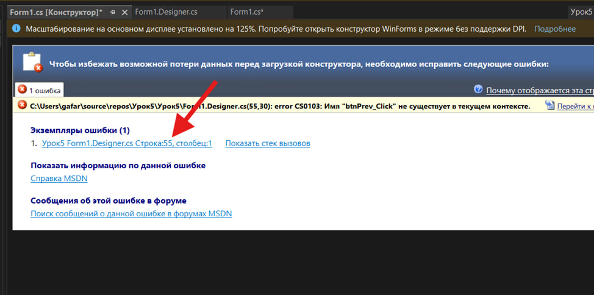
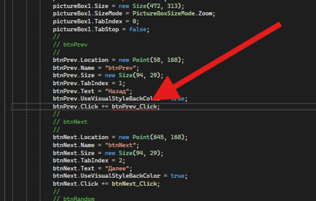
Удалите строку, которая подсвечивается, закройте форму Form1.cs [Конструктор] и откройте снова через обозреватель.
Заключение урока
На этом уроке мы сделали большой шаг от консольных игр к настоящему оконному приложению! Теперь программа может показывать графику — картинки, а не только текст. Мы познакомились с базовыми элементами Windows Forms: формой, кнопками, PictureBox. Узнали, что массив помогает хранить сразу много элементов и научились им пользоваться по индексу.
Ребята увидели, как можно загружать данные из внешних файлов и отображать их — то есть фактически связали программу с внешним миром (файловой системой). Обязательно похвалите учеников за проделанную работу 🎉
В итоге у каждого получилось приложение «AI-Галерея», где можно:
- научились генерировать случайный код с помощью Random
- работали с массивами (string[]) и обращались к элементам по индексу
- использовали Windows Forms — форму, кнопки, PictureBox
- загружали файлы с диска через Image.FromFile()
- реализовали циклический просмотр (после последней картинки — снова первая)
- добавили режим случайного изображения
Пусть запустят свои галереи, покажут соседу любимую картинку, почувствуют себя настоящими программистами, создавшими настоящее приложение с окошком! Впереди нас ждут новые горизонты: события, более сложные структуры данных, возможности GUI.